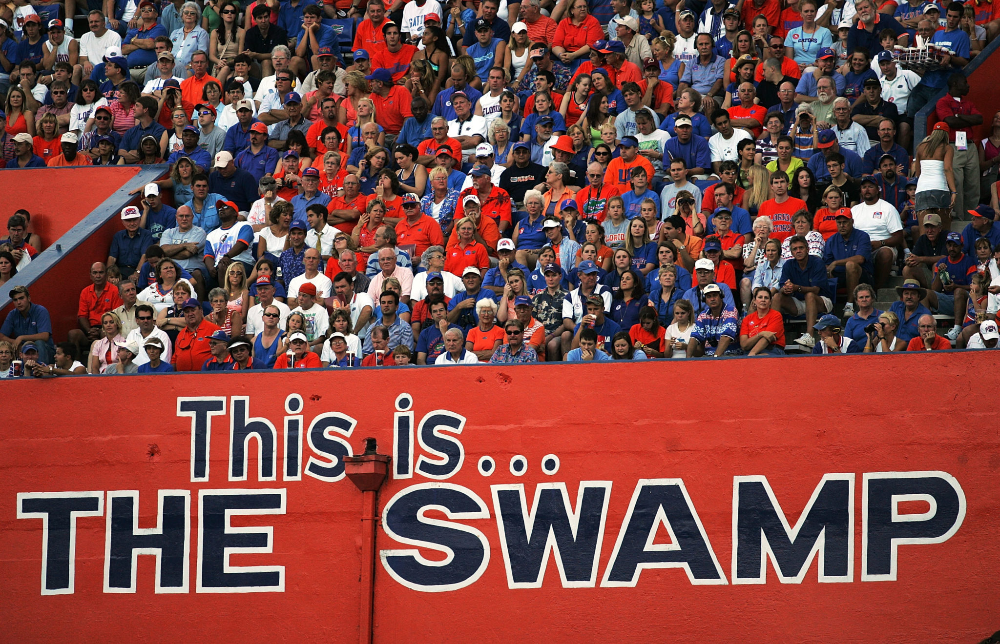
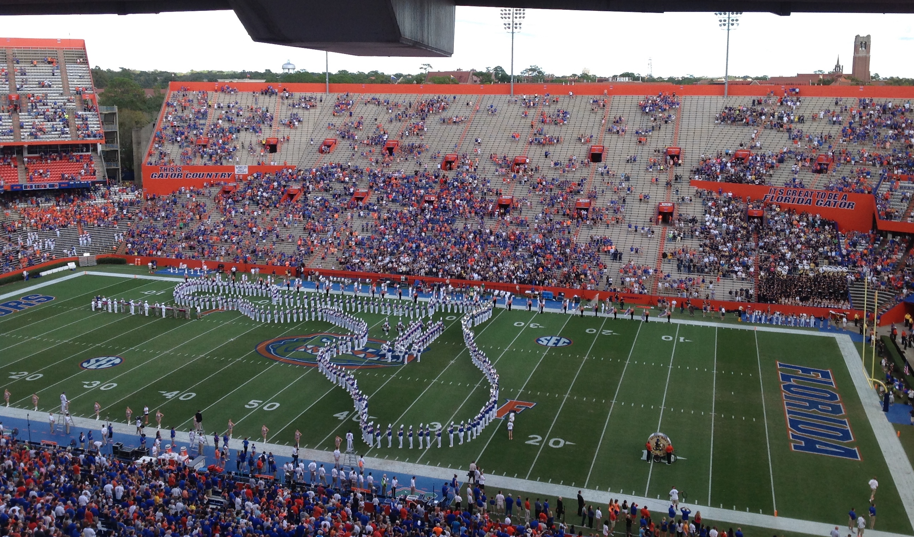
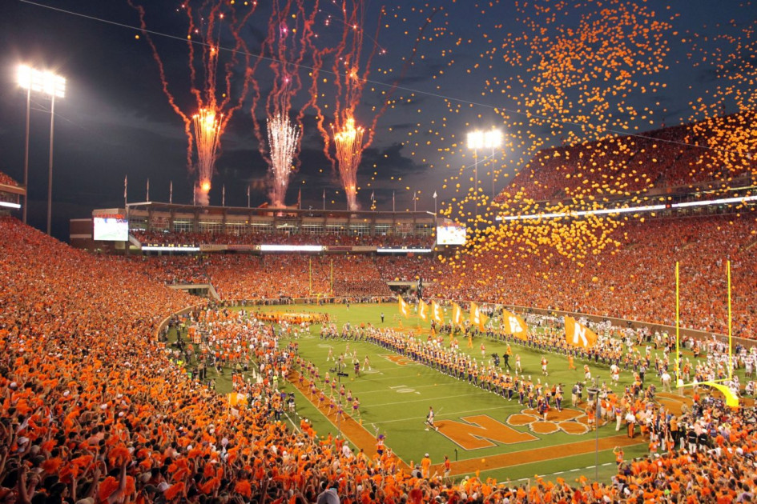
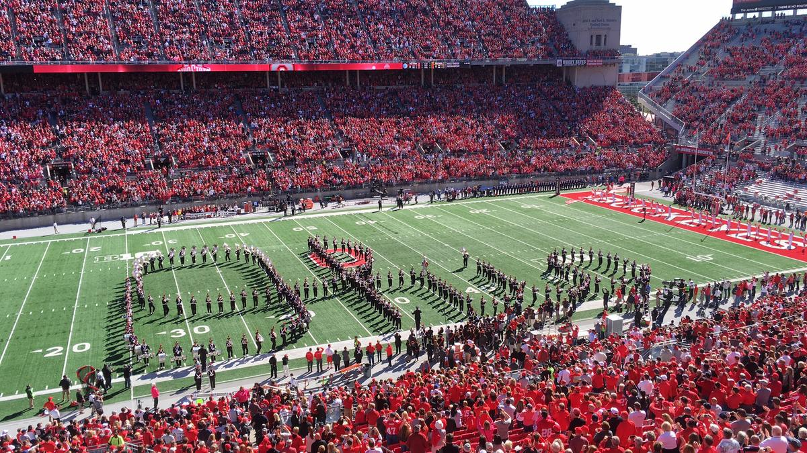

As college football prepares to crown its latest champion, the game is facing a much bigger question than Clemson or LSU: namely, why are crowds at stadiums across the country shrinking? University administrators have tried fix after fix—but without ever diagnosing a root cause beyond 'kids these days.' To get to the heart of the problem, we set out on a journey across the college football landscape.
It’s a few hours before Florida hosts Vanderbilt, and hundreds of fans are hovering around the statues of Tim Tebow, Steve Spurrier and Danny Wuerffel that grace Ben Hill Griffin Stadium. Some pose for photos and then linger, as though hoping the school’s Heisman Trophy winners might unbend their bronze arms and offer benedictions. Tebow was 23 when his monument went up in 2011—too young to rent a car without added fees, but old enough to be canonized. Like religion, college football is full of miracles, steeped in nostalgia and not extremely logical.
I make my way through the picture-takers and around the curved walls of the stadium, passing tailgates set up under blue and orange tents. One lot is particularly packed, with fans pressed up against a rope-line running down its middle. Cheers erupt when coach Dan Mullen and his team parade through on their way to the locker room. The players high-five fans who’ve gotten close to them, the football gods. It’s game day in Gainesville.
As I enter the stadium a few minutes before kickoff, the audio system rumbles through the cement pillars and I’m ready for an overwhelming surge of energy. But when I make it out into the open air, the first thing I notice are empty metal bleachers reflecting rays of bright Florida sun. While the alumni section I’m standing in is filled, the top third of the student section opposite me is mostly empty, a scatter-plot weighted toward the bottom. I was expecting the frenzied vibe of a rave; what I’ve got is more of a buzzy mimosa brunch.
But in the press box, Tyler Nettuno, a reporter for the school’s student newspaper, The Alligator, is pleasantly surprised. “It’s a way better crowd than I thought it would be at kickoff,” he says, looking out at the fans. More students show up during the first quarter, but there are still empty rows. The general admission seats above both end zones are patchy, too. “For a 12 o’clock game,” Nettuno continues, “this is the best I’ve seen it.”
If this is the best, that’s not great for the Gators. After all, this is Florida football at the one and only Swamp. Almost every billboard along the highway leading to town is blue and orange. Alligators adorn special edition license plates. The whole town seems to know the words to "We Are The Boys From Old Florida." SEC football has been the lifeblood of this place. I am standing in a house of worship for a Saturday sermon.
But fans aren’t showing up the way they used to. Average attendance in 2018 was the lowest it’s been for Florida since 1990. While the ’19 season saw an uptick of about 2,000 fans per game—for an average of 84,684 in a 91,916-capacity stadium—attendance has still fallen nearly 6% over five years. Florida isn’t alone—and plenty other schools have it much worse. From 2014 to ’18, attendance across the FBS fell by 7.6%. Last year, on average, 41,856 fans went to games. That’s the lowest turnout since 1996; even major programs like Ohio State, Virginia Tech and Ole Miss suffered declines of greater than 5%. The NCAA has yet to release its full report on 2019’s numbers, but pictures of nearly-empty stadiums, from big to small programs, popped up every fall weekend on Twitter. During bowl season, as games moved to neutral sites, the stands were so empty it looked more like spring football. Even athletic directors will openly admit it: College football is facing an attendance crisis.
While the pews might be emptying out, devotion is not diminishing. A 2018 Gallup Poll found that Americans care about college football more than any professional sport besides the NFL. And while TV ratings fell in recent years, they’re once again on the rise. People care and people watch. They just aren’t going as they once did.
To be fair, college football isn’t the only sport facing turnstile trouble. Major League Baseball attendance has dropped 7.1% since 2015, and this season the NFL posted its lowest numbers since 2004 (though a large chunk of that was due to a fan revolt in Washington, plus the Chargers’ move to a small stadium in Los Angeles and the Raiders’ upcoming relocation to Las Vegas). On the other side of the coin, NHL attendance is down 0.7% from 2013-14, but grew last year. And the NBA has seen an increase in attendance since the 2011-12 lockout season.
But college football, steeped in culture and tradition, is supposed to be impervious to change. Yet the numbers might be even worse than they seem: A 2018 Wall Street Journal report found that only 71% of the people who bought tickets to FBS games actually went.
The ramifications for universities are real: Iowa adjusted its school budget by $1 million last year because of falling revenue from ticket sales. And so, nationwide, administrators are scrambling. Six SEC schools, including LSU and Tennessee, started selling alcohol in their stadiums this season, after the conference lifted its ban. Alabama installed a Big Brotherish geo-tracking app to reward students who stay the whole game with better odds of snagging playoff tickets (though that didn’t turn out to be much of a reward this season). Florida brought in food trucks and DJs before games. Clemson lowered concession prices. Ohio State isn’t raising the cost of tickets next year.
These measures are the equivalent of sticking a thumb in a leaking dam, however, because nobody knows exactly what’s making the dam buckle. While empty seats are popping up in all sections of the stadium, the problem appears most acute among students: college papers across the country have reported on declines in student attendance while administrators have targeted marketing program after marketing program at them.
So, of course, people often blame kids these days. “Watching young people, you know, live like this,” Northwestern coach Pat Fitzgerald said at a press conference last year as he mimed typing on a phone. “I think phones, I think technology has been the decline in attendance.” Yes, it’s easier and cushier than ever to watch games at home, but phones and high-def screens have been around for well over a decade now. Could that really just be it?
I want to find out—and tease apart the reasons for all the empty seats—which is why I’m sitting alone in Florida’s student section on a lovely November day during a blowout of Vanderbilt. I’m starting here in Gainesville, in hopes of understanding why a resurgent program in the SEC—the SEC!—is struggling to fill its stadium. Then I’ll visit Clemson, where the Tigers didn’t sell out a single game during last season’s perfect championship campaign and did so only three times this season, despite another undefeated run to the title game. Last, I’ll head to the Horseshoe to watch Ohio State face Penn State in a classic late-season Big Ten showdown. If the stock market fell as abruptly as Buckeyes’ student season ticket sales did this year, we’d be in a massive recession. At the end of my journey, what I find will end up being both more complicated and far simpler than I imagined.
Gainesville
I get to Gainesville on the Friday night before the Vanderbilt game. After being surrounded by screaming, Disney-bound children on a flight to Orlando, I very much need a drink, so—like a stereotypical sportswriter—I head to my hotel bar.
It’s overrun by dentists. You’ve probably never seen this many dentists in one place unless you’ve been to dental school, which, thankfully, all these dentists have. They graduated from Florida and are in town for a reunion, always scheduled on a fall weekend when the Gators play at home. An older man named—and I swear I’m not making this up—Glenn Beck tells me this when I ask him what’s going on. He and his wife, Marci, join me at a table. They were both class of ‘79 and now fix teeth together in Tallahassee.
Glenn has noticed that the stands are emptier than they used to be. He finds it strange. “This is the Deep South,” he says. “People identify with it. When Alabama didn’t have a whole lot, they had Alabama football. They were the best in the country at something.”
“Maybe the Millennials have other things going on,” Marci says, shrugging. Many alumni assume this (though students now in college are actually Gen Z). Before I got to Gainesville, I had called Kathleen Klimek, a junior at Florida and the president of the student fan group, Rowdy Reptiles. She said alumni tweet pictures of the empty student section at the Rowdies’ Twitter account.
“It’s just like, ‘Oh, Millennials,’ or whatever,” Klimek told me. “It’s creating this really kind of bad relationship between alumni and students. We’re all on the same team.”
The Becks don’t mind that tomorrow’s game won’t be very competitive; they’re just happy to be back in this familiar place with these familiar people. At one point, a man yells, “Two Bits!” It’s the cheer that kicks off every Florida game and the Becks, along with everyone else in the bar, join the call-and-response: “Four bits!”
“Six bits!”
“A dollar!”
“All for the Gators, stand up and holler!”
The man makes three circles with his right arm and punches the air to cheers and applause. Once it enters your system, college football has a hell of a half-life.
Around 11, I excuse myself. The dentists keep partying.

When I arrive on campus the next morning at 8, the dew hasn’t yet dried off the majestic moss-covered live oaks lining the university’s grounds, but techno is already pulsing from the frat houses like rhythmic alarms. TV networks dictate the times of football games, and you have to begin early to get sufficiently drunk for a noon start. Rather than traditional parking lot tailgates, Florida kids pregame at frats. Some houses shut down the parties before kickoff to encourage kids to go. Others keep drinking and watch on TV. At least that’s what a few students told me. I want to see for myself.
When I approach the front door of Sigma Phi Epsilon and introduce myself to the three young men with neat haircuts checking people in, they panic. One whispers to another, who gets up and rushes into the building.
“We’re just going to get our communications manager,” the whisperer tells me. “We can’t talk to you until he’s here.” While I wait, kids whoop and shout at friends as they walk down the street, some filtering into the house. Finally, the comms guy—a tall blonde student in a polo—emerges.
“Yeah, now’s just not a good time, we just have so much going on,” he says. “Everyone’s too busy.” He says they won’t have time to talk to me after the game, either, or ever, as a matter of fact.
I move on to the Kappa Alpha house nearby. Guys are tossing a football around on the walkway and eagerly tell me that while many go to the games, a number do choose to stay here or go to bars. But our conversation is cut short when a kid in a backward hat and a fleece comes outside. He says he’s their “Risk Manager” and tells me that “brothers don’t talk to reporters.” I’m clearly a risk to be managed, so I decide this is a dead end and head to the stadium.
By the second quarter, it’s still easy to find an empty seat. I’ve come down from the press box and am now perched next to juniors Alia French and Brianna Harris. They grew up together in Palm Beach and neither has season tickets. “I think if the tickets were free, more students would come to games,” Harris says. French, who’s studying to be a physician’s assistant, has only attended one other game this year. I ask her if she likes going to Florida. “Yes, but it is definitely difficult,” she says. “The academic rigor keeps increasing every year. There’s no such thing as an easy class anymore. My sister didn’t even apply to Florida because she was too intimidated.”
When fans and experts talk about declining attendance, the skyrocketing price of college rarely comes up—nor do all the ways rising tuition has changed the higher education landscape. According to the U.S. Bureau of Labor Statistics, the cost of attending college was more than 40% higher in 2019 than in 2009. Ten years ago, the average in-state cost of a public institution was $15,240; in 2018 it was $21,370. Prices at private four-year schools have climbed even more dramatically—from $35,353 to $46,950—making universities like Florida, with an in-state cost of attendance of $21,210, an increasingly attractive option. As a result, UF, the top school in the state according to the U.S. News & World Report rankings, is harder than ever to get into: The acceptance rate this year was 34.1%, down from 44.1% in 2013.
“At UF, we are getting more competitive academically at the same time we’re getting more competitive in athletics,” Klimek, of the Reptile Rowdies, told me on the phone. “We’re the best school in Florida, so I think a lot of our student population is coming here with academics strictly on their mind. And there’s such a great deal in-state, and really great scholarships, that a lot of kids who got into other schools are pressured into going here. So I think that some kids, while they might love it now, may have resented their parents for it.”

Beyond the anecdotal, it’s hard to know how many Florida students lack school spirit because they’re disappointed to be there. But it is definitely true that Florida’s student body is changing. “The University of Florida has such a high-talented crop of students who apply that it ends up setting the bar higher each year,” Nicola Williams, the coordinator of counseling and educational services at Seminole County Public Schools tells me when I call her up a week later. “The middle 50%—as far as SAT and ACT scores and GPA—they tend to trend higher and higher each year.”
In fact, student bodies are changing at flagship state universities across the country, most of which have also become more competitive. Now, look: I’m not saying kids who test well don’t like football, but it is worth wondering if perhaps students’ priorities shift. Some may come more focused on academics; without doubt, many others will be more spending conscious. With mountains of debt invested in your education, maybe you’re less likely to drop $40 on a ticket.
Mullen breathed life back into UF’s sputtering program when he took over in 2018, with 21 wins in two years. He has been vocal about wanting a full stadium, and while attendance has bumped back up nearly 3% this year, turnout has been uneven. A late September game against Towson game was more than 11,000 people under capacity. “Next week I expect everybody to be a little bit louder,” Mullen said at his post-game presser. That game, homecoming against Auburn, sold out.
But just because fans make it through the turnstiles doesn’t necessarily mean they’ll stay the whole game; power program coaches have groused about supporters overly concerned with beating traffic. With 10 minutes left in the fourth quarter against Vanderbilt and Florida—already knocked out of the playoff chase—up by 49 points, the Swamp empties out. Business school student Quinn Magevney has stayed put, alongside a friend, in the middle of an empty row near the 50-yard line, about halfway up the bleachers. Magevney stares intently at the field. “We’re winning, why wouldn’t I stay?” he says. “I pay to see us win.”
Clemson
Could there be, however, such a thing as too much winning? To find out, I touch down in Greenville, S.C., a week later. It’s a gray, chilly November Friday. Wake Forest has also come to town, hoping to avoid the same mauling every other team has suffered against the Tigers. The drive to campus takes about 45 minutes, and the dates of Clemson’s national championships adorn every road sign I pass: 1981, 2016, 2018. In a few weeks, coach Dabo Swinney and his players will win another ACC title on their way to making their fourth CFP final in five years. But last season’s undefeated campaign was the first time since Swinney took over in 2009 that the 81,500-seat Memorial Stadium wasn’t full for a single home game. There have only been three sellouts during this undefeated run. Average attendance at Death Valley was 80,868 this year—not too far below capacity, but not a packed house.
I park and walk down to Littlejohn Coliseum, the basketball arena. A line of students is already wrapped around the building, waiting for free tickets. The university hands out about 1,500 of these each week to students who declined to ante up the $175 for a season ticket or did not win the online lottery for single-game seats.
While there’s still demand for tickets, most games empty out after two quarters. “To a lot of people, it gets boring when you’re up 70 to nothing in the first half,” says Will Cox, a first-year student standing in line. He’s from Anderson, South Carolina and has gone to games with his parents, both Clemson alumni, his whole life. Sporting events are like any other type of story: They’re boring without much tension. The energy of a rocking stadium, the “ohmygod, can you believe they did that?” moments, are what you remember. It’s harder to go crazy in the stands without an adrenaline rush, and beatdowns don’t provide much of one. This season, the Tigers’ regular season average margin of victory was 35.2 points.

Like many other state schools faced with crunched budgets, Clemson has also increased its number of out-of-state students—who pay higher tuition—in recent years. In 2018, out-of-staters made up 39% of the freshman class, a number that has slowly climbed over the past two decades.
“There’s a lot of people from New Jersey,” Cox says. “They won’t stay as long, it’s not their dream to come here. Halftime is mostly when everybody falls off.”
Clemson has in fact experienced a New Jersey boom—570 Garden Staters enrolled in 2019, up from 460 in 2013, according to the Greenville News—and several Clemson students echoed Cox’s sentiment to me. Of course, being from New Jersey doesn’t mean you can’t love college football and plenty of out-of-staters, including some I talked to on my travels, embrace their teams with the fervor of the converted. For many, it’s a big part of a school like Clemson’s draw. But it also stands to reason that you’re less likely to be a hardcore fan if you weren’t raised with it—if it’s not part of your family, like Cox’s, who went to every game last year. This season, however, his parents decided to miss a few home games, like this one, to save up for a possible trip to the CFP. It’s expensive to tailgate in style.
“A lot of people are saying, how about we skip the ACC championship game and try to go to the playoff game?” Cox says. “Especially when you have a team in the running to go every year.”
From the press box the next day, I watch Death Valley start to fill up before the 3:30 start. The reporters around me are buzzing about a college football team, but it’s not Clemson: Notre Dame failed to sell out its stadium today for the first time in 273 games. The last time that happened was on Thanksgiving in 1973. If South Bend isn’t safe from empty seats, is anyone?
Here at Clemson, it’s Senior Day, but at kickoff a portion of the student section isn’t totally full. There are also two noticeable patches of empty seats in either corner of the upper bowl; announced attendance is about 700 people under capacity. The empty sections were reserved for Wake Forest fans, but few showed up. Why spend money on travel to watch your team be blasted into the sun? Clemson didn’t have much luck repackaging and selling all the visiting tickets.
Between the first and second quarter, I meet Clemson’s athletic director, Dan Radakovich, in a suite next door. He’s aware that attendance is falling across the board, but tells me it hasn’t been as much of a problem for Clemson. This year’s average, however, is about 4,000 people fewer than it was in 2015, when the program hit a record high average attendance of 84,038. That’s close to a 4% drop.
“We have a lot of people working on this,” Radakovich eventually admits. “Not just in marketing but in development areas, with game operations people. It’s a collective effort to make sure it is top of mind for everybody in the department to be sure we get people to the games.”
Enticements include improving cell service in the stadium and lowering the price of concessions. But when your team is up 30 points by the start of the third quarter, it’s hard to keep people engaged. Clemson lets fans leave the stadium and reenter, which is rare in college football. Once they’re gone, many opt to stay at their tailgates.
With seconds to go before the half, Clemson QB Trevor Lawrence throws a 30 yard TD bomb that puts his team ahead of Wake Forest 31-3. Back in the pressbox, one of the reporters near me gestures at all the orange-clad people filtering out. “It’s a real problem,” she says, “I mean, look at this.”
I don’t blame the fans. The parties are fun and the setups elaborate. I’ll leave soon myself. I head outside to the parking lots halfway through the third quarter and pass one trailer wrapped in tiger stripes with a 60-inch TV mounted on the side. Another boasts two 55-inchers. Most people have satellite reception, along with gas grills and carpets rolled out over the asphalt. There’s pulled pork everywhere I look. The groups here are mostly families; this isn’t some debaucherous college scene. I’ve never been offered so much food at once, and I have a Jewish grandmother.
At the beginning of the fourth quarter, the parking lots are bumping. Christmas lights hang from tents as fans party into the night. The score is 52–3 as I chat with a group of seniors and their moms drinking spiked seltzer near a truck bed with a television on it. This is their last home game as students.
“We’re big fans, I guess we just don’t stay in the entire game because we’re usually winning,” says Mary Margaret Cain, a nursing major. “Yes, we’re out at halftime, but what do we have on our TV? The Clemson game. So it’s like we’re there, but we’re not there.”
Columbus
It’s the Friday before the Penn State game, and I find myself saying “Go Bucks!” to a man wearing an Ohio State sweatshirt in the lobby of my Columbus hotel. He nods back at me and replies, “Go Bucks!” Have I...passed for an Ohioan?
I have not. This becomes clear when I head to the campus student center and a group of young people wearing OSU gear greet me with wary looks. I explain that I’m a reporter, assure them I’m not a narc—which is 100% something a narc would say—and ask if they’re going to the game tomorrow. It turns out they’re student-athletes and will get in trouble if they don’t clear this conversation with their communications director first (at least they don’t have a Risk Manager). On the condition of anonymity, they sheepishly tell me they aren’t going to the game. It's much more fun to watch in bars or at frats, they say, especially when every game is a blowout.
Following a 2.8% attendance decline from 2013-2018 at Ohio Stadium, 2019 actually saw an uptick of about 1,400 fans per game. But student season-ticket sales dropped this year from the previous season by a jarring 24%. The school sold 6,500 fewer packages—costing between $144 and $272—after last year’s Big Ten championship campaign.
I wander into a small gym on campus. Senior psychology major Isaiah Swoops is working the desk, swiping students’ ID cards. He explains that the gym isn’t always this full on Friday evenings—people are taking it easy tonight because they’ll start drinking at 6 a.m. for the noon kickoff. Swoops, a senior, bought season tickets the past three years. This season, he didn’t. He hasn’t gone to a single game.

“Fortunately, we have a really competitive program,” he says. “But our opening game this year was Florida Atlantic. Do I really want to go sit through it and watch us beat down Florida Atlantic? Or do I want to watch at home or a bar with my buddies and see some of the other games going on in college football?”
“If we were to play a more competitive schedule at home, that would cause me to want to go,” Swoops continues. “There’s nothing better than going to see a good game in person.”
The scores of Ohio State’s home games this season to date had been: 45–21, 42–0, 76–5, 34–10, 38–7 and 73–14, the last a win over Big Ten “rival” Maryland. In 2014, amid a larger wave of conference realignment, the Big Ten expanded to include Rutgers and Maryland. Both were placed with OSU in the conference’s eastern division, meaning they play the Buckeyes every year (and every other year at home). Neither Rutgers nor Maryland is consistently competitive, but both are near major media markets, bring more viewership to the Big Ten Network and more money to schools in the conference.
Obviously, not every program is as dominant as Ohio State and Clemson. But in 2019, the average margin of victory for the 25 FBS teams with the highest plus-minus was 17.54 points. Five seasons ago, it was 14.14. (In the intervening years, that number has hovered between 14 and 15 points). Conference realignments and weak non-conference contests likely contribute to the large differentials.
By 2014, most schools were playing non-conference games scheduled very far in advance. We’re talking “will we still be alive then?” in advance. The trend started in the aughts, when teams like Oklahoma—a pioneer in advanced football planning—started booking 10 years down the road to get the jump on other schools. Soon, other programs followed, and it became a scheduling arms race: Ohio State will play Georgia in the Horseshoe in 2030. Clemson will host Notre Dame in 2037. These would be great games to watch next year, but how are we supposed to know what these programs will look like in a decade or more? Scott Stricklin, Florida’s athletic director, mentioned the problem a few weeks ago.
“The way we schedule, it has to be conducive to keeping people engaged,” he said. “But usually when there’s a problem like [falling attendance], there’s no one thing.”
Ohio State offers a Big Ten package that’s popular with students, but this year it only featured four games rather than five, as it did last year, and the must-see rivalry game against That School Up North was up north, in Ann Arbor. For the 6,500 fewer students who bought season tickets, the price didn’t seem worth it. This doesn’t mean they all didn’t go—tickets are easy to find on the secondary market—but it does mean they didn’t commit. Football’s once iron grip had grown a little more tenuous.
"But this, to me”—she gestures at the field and the stands—“is Ohio State.”
While today’s game isn’t Michigan, it’s definitely Ohio State’s best home matchup of the year. The Nittany Lions are ranked No. 8 in the country. If they can beat No. 2 OSU they could vault into playoff contention. Wading through the sea of pregame tailgates outside Ohio Stadium, nearly all the alumni and older fans I talk to are fired up. They think it’s going to be a fight.
They don’t, however, think the school has any problem filling the stadium. Almost every time I bring it up, they get defensive. “I think we’re sold out every game,” says Ameen Farwana, who didn’t go to Ohio State but is from Columbus and has adopted the team as his own. “Honestly. I don’t think we’ve not had a sellout in 30 years.”
He is wrong, but today is a good showing for the students. It’s gross out—42º with rain and wind— yet Block O, the student section, is full at kickoff. The upper corners of the stadium above it, however, are empty, and stay that way the whole game. A crowd of 104,355 is here, about 600 under capacity. At least that’s what the ticket sales say—who knows how many people actually came in this weather. But junior psych and criminology major Sammy Sundell showed up. She doesn’t miss a game.
“I’m a big sports person, so I come,” she says. “But I just think it all depends not even on how we’re doing, just the social thing. My friends are so caught up in [the social scene] that they won’t come. But this, to me”—she gestures at the field and the stands—“is Ohio State.”
A fair amount of students at all three schools told me that they wanted to attend games, but didn’t if their friends wanted to party elsewhere. The tide of shifting student habits can be hard to swim against, and in Ohio State’s case, the stadium is almost a mile away from the bars. When you’re drunk, that walk might as well be the length of the Iditarod.
Today, it would be worth it. The third quarter is electric. OSU had gone up 21–0 early, but the Nittany Lions answered with three scores, narrowing the lead to 17-21. As the Buckeyes try to counter, chants of O, H, I, O surge around the Shoe with enough energy to power the entire city. Ohio State will eventually pull away and win 28-17, but for now, despite the cold rain, I don’t want to be anywhere else. When a team wins a close game on TV, you watch it. When a team wins a close game and you’re there, you feel it.
Right before halftime at the Florida game, I saw a group of four girls in very cool ripped, baggy jeans and tube tops arranging themselves in various configurations of three while one rotated taking pictures. I offered to take a photo of the four of them, and afterward, one mentioned a business class she took where the instructor had students examine why attendance was falling at UF games. So when I got home, I called up the professor, Jim Hoover.
Hoover wanted to be clear that he didn’t conduct a widespread survey; he just had his 50 students this fall ask their friends why they weren’t going to games and then compiled a list of common reasons. Many students cited hot weather, the lack of beer in the stadium and cakewalk games. But one of the most common reasons was the cost.
“It’s 20 bucks per ticket for UF games,” Hoover said. “You pay in the beginning of the year for the whole schedule. They said that was a detriment, especially when you have so many other options for entertainment. Is it worth the $20-per-ticket price?”
That’s the million-dollar question (literally, if you’re Iowa’s budget). And there are thousands of factors that go into answering it. Students wonder whether it’s worth paying when you don’t know if your friends are going to go. When it might be 125º—or 25º, depending on your school—at kickoff. When you might be watching a blowout. When college is already so expensive that you’re facing decades of debt. When the academics are harder. When there have never been more cheaper entertainment options just a click away. Fans who aren’t in school ask many of the same questions.
Before we hung up, Hoover recited reasons students didn’t give: “I didn’t hear anything about [traumatic brain injury]. I didn’t hear anything about the violence of the sport, didn’t hear that it was boring relative to other options, didn’t hear anybody complain about long timeouts for TV. The things people think. I never heard any student say those in my class.”
Hoover’s comments drove home how when we talk about falling attendance in college football, it’s often speculation divorced from students’ actual lives. But this isn’t a referendum on kids these days. It’s a referendum on college these days, which affects college football these days. It sounds obvious, but what did you think would happen when students facing astronomical tuition bills were asked to pay more to watch less competitive games? Declining attendance isn’t a sign of moral weakness or a lack of emotional investment, it’s a sign of shifting realities. If I learned anything on college campuses this fall, it’s this: Fans still believe in the gospel of football. They’ll even pay for it. It just has to be worth the cost.